One art-directable mesocyclone, solved on the game thread and rendered through Unreal's native cloud volume.
큰 폭풍 하나를 언리얼 볼류메트릭 클라우드에 올립니다. 계산은 게임 스레드에서 돌고, 모양은 에디터에서 직접 만져서 잡습니다.
액터 하나가 형상부터 모션, 프로파일, 플로우맵, 라이트닝까지 다 들고 있습니다. 셰이프 타깃 두 장은 월드 서브시스템이 관리하는데 입력이 실제로 바뀌었을 때만 다시 굽고, 결과는 클라우드 머티리얼로 넘어갑니다. BP_VolumetricSuperStorm을 끌어다 놓으면 배선은 알아서 되니 머티리얼 그래프를 열 일은 없습니다. 에디터 뷰포트도 같은 경로를 타기 때문에 뷰포트에서 본 그림이 그대로 나갑니다.
The actor owns shape, motion, profile, flow-map and lightning state. A world subsystem owns the two shape targets, re-bakes them through compute only when the inputs actually change, and binds them onto the cloud material. Drop in BP_VolumetricSuperStorm and it wires itself — no material graph work. The editor viewport ticks the same path, so what you tune is what you ship.
An authored timeline: a flash pulse curve, ground strikes resolved against Landscape height, and free-form cues that fire Blueprint events. Hot-white, fill and leak colors reach the material with an HDR core peak. No bolt VFX and no audio ship — the events are the integration point, and BP_VolumetricSuperStorm carries worked examples of the handlers.
라이트닝 타임라인은 직접 짭니다. 플래시 펄스 커브를 그려 두면 지상 낙뢰는 랜드스케이프 높이를 읽어서 떨어질 자리를 정하고, 원하는 시점에 큐를 심으면 블루프린트로 이벤트가 올라옵니다. 코어와 필, 리크 색이랑 HDR 피크 값은 머티리얼로 바로 넘어갑니다. 볼트 VFX도 사운드도 없습니다. 붙이는 지점은 이벤트고, BP_VolumetricSuperStorm에 그 핸들러 예시가 있습니다.
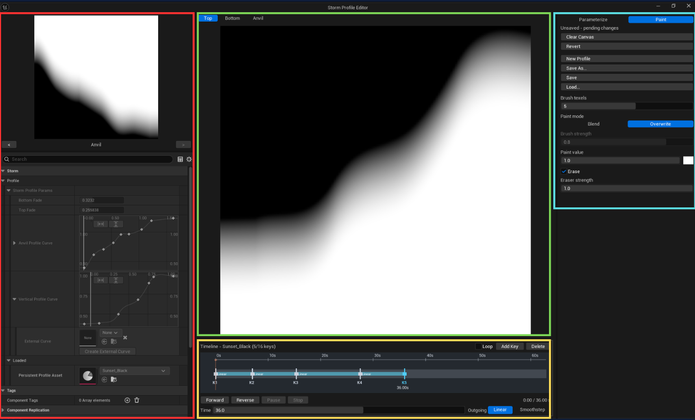
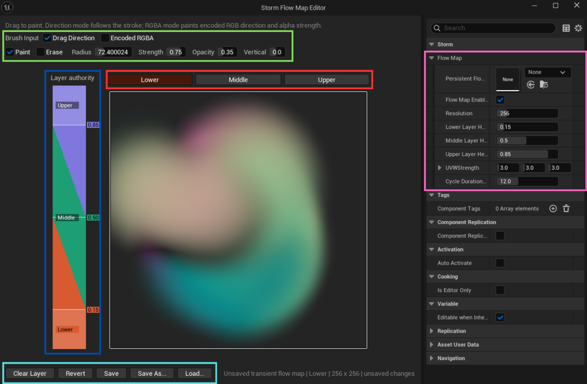
One preset asset holds the whole storm — shape and motion settings, formation and dissolve durations, the vertical profile and flow-map references, and the complete lightning sequence. A profile asset holds up to sixteen keys, and playback blends between them — driven by the built-in transport or by a curve of your own.
프리셋 하나에 폭풍 설정이 통째로 담깁니다. 형상과 모션, 형성·소멸 시간, 버티컬 프로파일과 플로우맵 참조, 라이트닝 시퀀스가 다 들어갑니다. 프로파일 에셋 하나에 키가 최대 16개 들어가고, 재생하면 그 사이를 블렌드합니다. 내장 트랜스포트로 돌려도 되고 직접 만든 커브에 물려도 됩니다.
What the engine, platform and GPU have to provide before the storm will render.
DirectX 12 with SM6 is required. The shape, profile and flow-map passes are compute shaders writing RGBA16F UAV render targets, and the shipped cloud material is authored against the SM6 feature set. DirectX 11 and Shader Model 5 are not supported.
Check Edit → Project Settings → Platforms → Windows.
Changing either setting requires an editor restart and a shader recompile.
The level requires a Volumetric Cloud component. A Sky Atmosphere and a Directional Light are also required for the expected cloud lighting.
폭풍이 화면에 나오려면 엔진, 플랫폼, GPU 쪽에서 먼저 맞춰야 할 것들이 있습니다.
DX12에 SM6가 필요합니다. 셰이프·프로파일·플로우맵 패스가 RGBA16F UAV 렌더 타깃에 쓰는 컴퓨트 셰이더고, 배포되는 클라우드 머티리얼도 SM6 기준으로 만들어졌습니다. DX11과 SM5는 지원하지 않습니다.
Edit → Project Settings → Platforms → Windows에서 확인하세요.
둘 중 하나라도 바꾸면 에디터를 다시 켜고 셰이더를 다시 컴파일해야 합니다.
레벨에 Volumetric Cloud 컴포넌트가 있어야 합니다. Sky Atmosphere와 Directional Light도 있어야 의도한 구름 라이팅이 나옵니다.
Getting the plugin into a project and confirming the three modules came up.
YourProject/
YourProject.uproject
Plugins/
VolumetricSuperStorm/
VolumetricSuperStorm.uplugin
Source/
Shaders/
Content/
Resources/An engine-wide installation under Engine/Plugins/Marketplace/ also works, but a project-local installation is easier to version with the project.
Open Edit → Plugins, search for Volumetric Super Storm, and confirm it is enabled. Restart the editor if you had to enable it manually.
In the Content Browser open Settings and enable Show Plugin Content. The VolumetricSuperStorm content root becomes available in the source panel. Without it, M_VolumetricSuperStorm and BP_VolumetricSuperStorm are invisible and the quick start cannot be followed.
플러그인을 프로젝트에 넣고 모듈 세 개가 잘 올라왔는지 확인하는 과정입니다.
YourProject/
YourProject.uproject
Plugins/
VolumetricSuperStorm/
VolumetricSuperStorm.uplugin
Source/
Shaders/
Content/
Resources/Engine/Plugins/Marketplace/ 아래 엔진 전역으로 깔아도 돌아갑니다. 다만 프로젝트 안에 두면 소스 관리에 같이 묶여서 버전 맞추기가 편합니다.
Edit → Plugins에서 Volumetric Super Storm을 찾아 체크가 되어 있는지 봅니다. 직접 켰다면 에디터를 다시 시작하세요.
콘텐츠 브라우저 Settings에서 Show Plugin Content를 켜면 VolumetricSuperStorm 콘텐츠 루트가 소스 패널에 나타납니다. 이걸 안 켜면 M_VolumetricSuperStorm과 BP_VolumetricSuperStorm이 보이지 않아 다음 단계를 진행할 수 없습니다.
From an empty level to a turning storm — including how the storm plugs into a cloud material you already have.
Add a Directional Light, a Sky Atmosphere and a Volumetric Cloud. The storm renders through the existing Volumetric Cloud component; it does not create a separate volumetric renderer.
There are two ways to place the storm, and a level uses one of them.
Place the native actor unless you have a reason not to. Every component, the lightning component included, is created by the native actor — the Blueprint adds example event wiring, not functionality. Building your own subclass is fully supported, and the same one-actor rule applies to it.
Otherwise open the volumetric cloud material you want to plug the storm into, and locate the MF_Storm_Global material function.
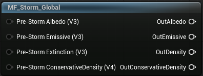
The inputs take the cloudscape you already have.
The outputs carry the same channels back out, with the storm composited in.
The analogy: the material function intercepts the existing connections to Albedo, Emissive Color and Extinction on the material output node, and does the same for conservative density on the Volumetric Advanced Output node.
Here is a working example, where the base material is UE 5.8’s native m_SimpleVolumetricCloud.
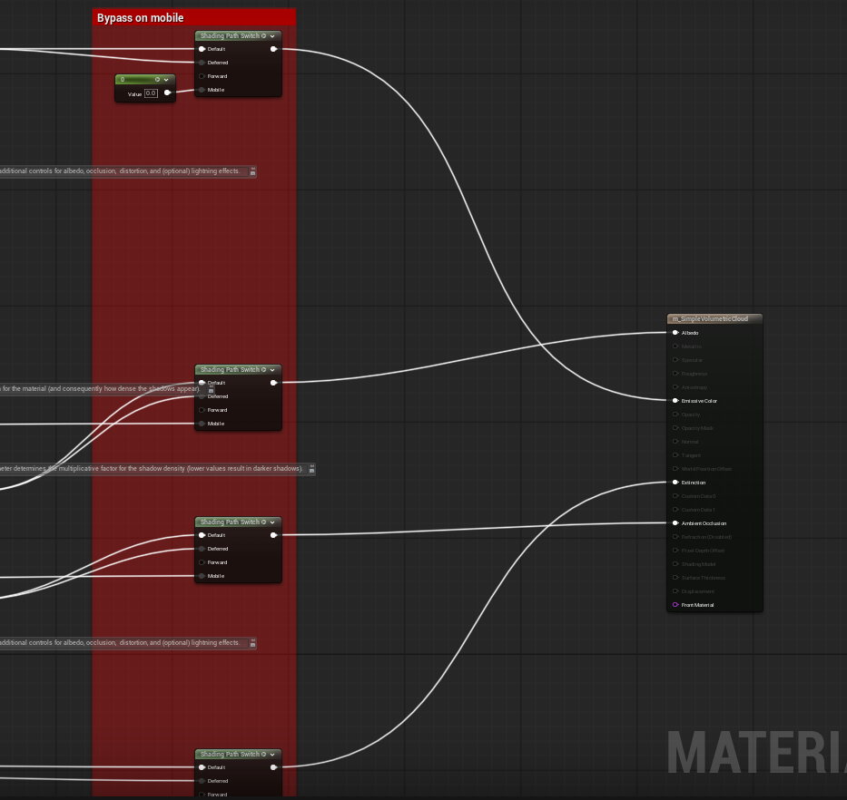
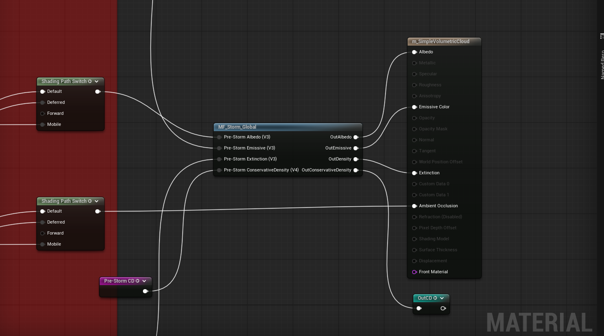
Conservative density is wired using named reroute nodes. It does not require manual wiring on either the input or the output, but wiring it as shown buys some ray-marching performance.
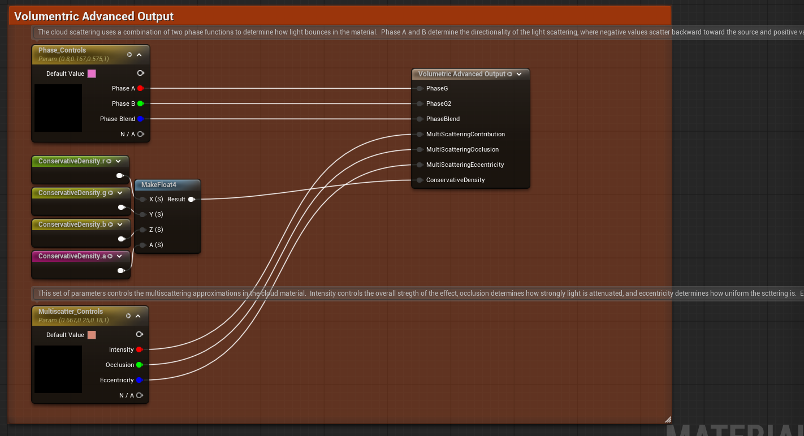
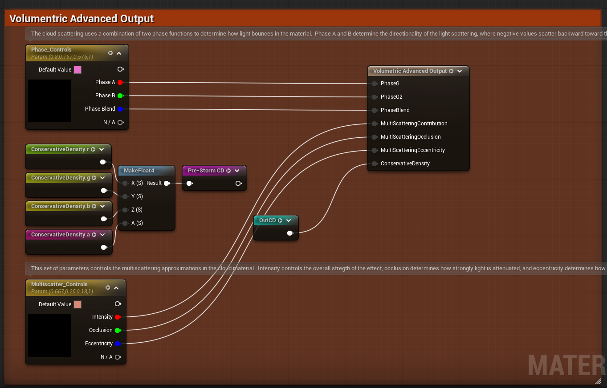
If the limit does not apply to you, skip this section. The fallback bypasses MPC capacity by overriding the Volumetric Cloud material with a Material Instance Dynamic.
Same step as above, but locate MF_Storm_MID instead. Its pins are identical, so refer to the tables above for wiring.
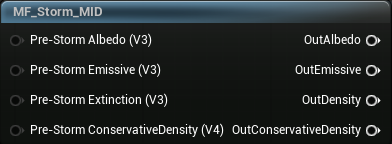
One extra step here. Select the storm actor and locate the MaterialBinder component in its Details panel.
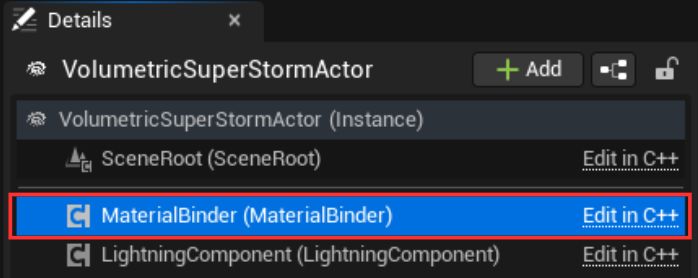
Under Storm | Material, set Binding Backend to Dynamic Material Instance. The binder defaults to Global MPC, and the two properties below are hidden until you switch it.
Then set the cloud to update in Target Cloud Reference, and the material to override in Base Cloud Material.
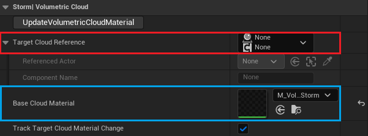
Useful first adjustments: Radius changes horizontal size, Anvil Coverage the complete outer radius, Anvil Strength the anvil contribution, Density and HF Strength the body density and erosion detail, Underside Visibility the lower lighting response.
Static shape changes schedule a shape rebake. Motion and lifecycle changes use frame-level material uploads.
Use Create Storm, Dissolve Storm, Show Mature Storm and Hide Storm Immediately. Formation and dissolution completion events are exposed on the actor.
빈 레벨에서 폭풍이 돌기까지. 이미 쓰고 있는 클라우드 머티리얼에 폭풍을 넣는 방법까지 다룹니다.
Directional Light, Sky Atmosphere, Volumetric Cloud를 놓습니다. 폭풍은 이미 있는 클라우드 컴포넌트에 그려집니다. 렌더러를 따로 만들지 않습니다.
배치 방법이 두 가지인데, 레벨에는 둘 중 하나만 놓습니다.
특별한 이유가 없으면 네이티브 액터를 놓으세요. 라이트닝을 포함한 컴포넌트는 전부 네이티브 액터가 만듭니다. 블루프린트가 더하는 건 기능이 아니라 이벤트 배선 예시입니다. 직접 서브클래싱하는 것도 지원하고, 하나만 놓는다는 규칙은 그대로입니다.
기존 클라우드 머티리얼에 폭풍을 넣으려면 그 머티리얼을 열고 MF_Storm_Global 머티리얼 함수를 찾습니다.
입력은 지금 쓰고 있는 클라우드스케이프를 받습니다.
출력은 같은 채널을 폭풍이 합성된 상태로 되돌려줍니다.
쉽게 말하면 이 함수가 Albedo·Emissive Color·Extinction으로 가던 연결을 중간에서 가로채고, 컨서버티브 덴시티도 Volumetric Advanced Output 쪽에서 같은 일을 합니다.
UE 5.8 기본 머티리얼 m_SimpleVolumetricCloud에 넣은 예시입니다.
컨서버티브 덴시티는 named reroute 노드로 연결했습니다. 입력이든 출력이든 직접 배선하지 않아도 되지만, 아래처럼 연결하면 레이마칭 성능에서 이득이 있습니다.
한도에 안 걸렸으면 이 절은 넘어가도 됩니다. 이 경로는 볼류메트릭 클라우드 머티리얼을 Material Instance Dynamic으로 덮어써서 MPC 용량을 우회합니다.
바로 위 단계와 같은데 MF_Storm_Global 대신 MF_Storm_MID를 찾아 넣습니다. 핀이 똑같으니 배선은 위 표를 그대로 보세요.
여기서 한 단계가 더 있습니다. 스톰 액터를 선택하고 Details 패널에서 MaterialBinder 컴포넌트를 찾습니다.
Storm | Material에서 Binding Backend를 Dynamic Material Instance로 바꿉니다. 기본값이 Global MPC이고, 아래 두 프로퍼티는 백엔드를 바꾸기 전까지 숨어 있습니다.
그다음 갱신할 볼류메트릭 클라우드를 Target Cloud Reference에, 덮어쓸 머티리얼을 Base Cloud Material에 지정합니다.
먼저 만져 볼 값들: Radius로 가로 크기, Anvil Coverage로 바깥 반경, Anvil Strength로 앤빌 기여도, Density와 HF Strength로 본체 밀도와 침식 디테일, Underside Visibility로 아래쪽 라이팅.
형상 값을 건드리면 셰이프를 다시 굽습니다. 모션과 라이프사이클은 리베이크 없이 프레임마다 올라갑니다.
Create Storm, Dissolve Storm, Show Mature Storm, Hide Storm Immediately 이 네 개로 라이프사이클을 돌립니다. 형성과 소멸이 끝나면 액터에서 이벤트가 옵니다.
Six named curves that decide how the storm changes from its centre to its outer edge.
Six named float curves control how the storm changes from its centre to its outer edge. One row, one visible result.
The curves do not tint the cloud. Their values are packed into internal shape lookup tables when the storm is baked, and colour channels no longer need to be selected or interpreted in the Details panel.
Most curves use the main body radius, where X 1 is the actor’s numeric Radius. Anvil Fill is the exception: its X axis spans the complete wind-aligned anvil footprint, so X 1 is always the anvil’s outer boundary.
For Bottom Softness, Top/Anvil Profile Coordinate, Layer Bottom and Layer Top the radius is clamped at the body edge, so the outer anvil continues using each curve’s value at X 1.
Controls how much of the low-frequency cloud carrier survives inside the main body. It changes density support, not the geometric radius.
The default curve keeps a broad, dense shoulder and erodes the edge.
Move the middle key left to begin breaking up the body earlier, right for a wider solid core. Lower only the centre value for an eye-like, sparser middle without shrinking the footprint.
Anvil Fill does the same density-support job inside the anvil. Its X axis is normalized across the complete anvil ellipse, so the X 1 key always controls the outer rim even when numeric Anvil Coverage changes the anvil’s physical size.
The numeric Anvil Coverage property and the Anvil Fill curve are different things: the first changes horizontal reach, the second changes density support inside that reach.
Anvil outer scale = 1 + Anvil Coverage
The editor range 0.2 to 1.0 produces a nominal scale of 1.2 to 2.0 body radii. The footprint is wind aligned rather than circular; for a numeric Anvil Coverage value C the extents from the storm centre are approximately:
The upper flow map steers this direction when enabled; otherwise the actor’s Wind Direction is used.
Controls the strength of the bottom-profile fade. It is not a density amount.
A value near 0.2 at the centre and 1.0 at the edge produces a firm core with a softer, more ragged underside around the outside.
A lookup coordinate, not cloud amount. It selects the horizontal X column sampled from both the Top and Anvil profile textures.
Its visual effect therefore depends on the Vertical Profile Curve, Anvil Profile Curve or painted profile currently loaded. With the default keys:
This reversal allows the usual profile to be authored from outer edge to centre. A constant 0.5 makes every radius sample the middle profile column; an oscillating curve reuses different columns in radial rings and can produce visible concentric steps.
The outer anvil keeps using the value at body radial X 1.
These two define the vertical slab available to the storm before the vertical profile is applied. Both use normalized height across the complete Volumetric Cloud layer — 0 is the layer bottom, 1 the layer top.
At each radius, local profile height is remapped into this slab:
Local height = (Cloud layer height − Layer Bottom)
/ (Layer Top − Layer Bottom)Keep Layer Bottom below Layer Top at every radius. If they meet or cross, the shader forces the top to be only a tiny amount above the bottom, so the column collapses instead of turning inside out.
Because the radius input is clamped at the body edge, the outer anvil inherits both height values at X 1. Keep that edge pair suitable for the shelf as well as the body.
Change one curve family at a time.
Starting points rather than complete Presets. Noise, profiles, the flow map and the Volumetric Cloud layer still affect the final result.
The named float curves retain the existing shape-texture packing internally. Useful when debugging a material or render target, not needed for normal curve editing.
폭풍이 중심에서 바깥으로 가면서 어떻게 변할지를 정하는 커브 여섯 개입니다.
커브 여섯 개가 폭풍 중심에서 바깥 끝까지 어떻게 변하는지를 정합니다. 한 줄이 눈에 보이는 결과 하나씩 담당합니다.
구름 색과는 상관없습니다. 베이크할 때 셰이프 룩업 테이블로 들어가는 값이고, 이제 Details 패널에서 컬러 채널을 고르거나 해석할 일은 없습니다.
대부분은 본체 반경 기준이라 X 1이 액터의 Radius입니다. Anvil Fill만 예외로, 바람 정렬된 앤빌 발자국 전체를 쓰기 때문에 X 1은 항상 앤빌 바깥 경계입니다.
Bottom Softness, Top/Anvil Profile Coordinate, Layer Bottom, Layer Top은 반경이 본체 끝에서 클램프됩니다. 그래서 바깥 앤빌은 X 1 값을 그대로 이어 씁니다.
본체 안에서 저주파 캐리어가 얼마나 살아남는지를 정합니다. 밀도 지지를 바꾸는 값이고 반경 자체는 건드리지 않습니다.
기본 커브는 넓고 두꺼운 어깨를 유지하다가 끝을 깎습니다.
가운데 키를 왼쪽으로 옮기면 본체가 더 일찍 부서지기 시작합니다. 오른쪽으로 옮기면 단단한 코어가 넓어집니다. 중심 값만 내리면 발자국은 그대로 두고 눈처럼 비어 보이게 할 수 있습니다.
Anvil Fill은 앤빌 안에서 같은 밀도 지지 역할을 합니다. X 축이 앤빌 타원 전체에 정규화되어 있어서, 숫자 Anvil Coverage로 앤빌 물리 크기를 바꿔도 X 1 키는 항상 바깥 테두리를 담당합니다.
숫자 프로퍼티 Anvil Coverage와 커브 Anvil Fill은 다른 물건입니다. 앞은 가로 도달 거리, 뒤는 그 안쪽을 얼마나 채울지입니다.
Anvil outer scale = 1 + Anvil Coverage
에디터 범위 0.2~1.0이면 본체 반경의 1.2~2.0배가 됩니다. 발자국은 원이 아니라 바람 방향으로 늘어납니다. Anvil Coverage 값을 C라 하면 중심에서의 거리는 대략 이렇습니다.
이 방향은 상단 플로우맵이 켜져 있으면 플로우맵이, 아니면 액터의 Wind Direction이 정합니다.
바텀 프로파일 페이드의 세기입니다. 밀도 양이 아닙니다.
예를 들어 중심을 0.2 근처, 끝을 1.0으로 두면 코어는 단단하고 바깥 아래쪽은 더 부드럽고 거칠어집니다.
구름 양이 아니라 룩업 좌표입니다. Top과 Anvil 프로파일 텍스처에서 어느 가로 X 열을 읽을지 고릅니다.
그래서 눈에 보이는 변화는 지금 로드된 Vertical Profile Curve, Anvil Profile Curve, 또는 그려 넣은 프로파일에 따라 달라집니다. 기본 키에서는 이렇게 됩니다.
뒤집혀 있는 덕분에 프로파일을 바깥에서 중심 방향으로 그릴 수 있습니다. 0.5 상수로 두면 모든 반경이 프로파일 가운데 열만 읽습니다. 오르내리는 커브는 반경 링마다 다른 열을 재사용해서 동심원 계단이 보일 수 있습니다.
바깥 앤빌은 본체 반경 X 1의 값을 계속 씁니다.
버티컬 프로파일이 적용되기 전에 폭풍이 쓸 수 있는 세로 구간을 정합니다. 둘 다 Volumetric Cloud 레이어 전체에 대한 정규화 높이로, 0이 레이어 바닥이고 1이 천장입니다.
반경마다 로컬 프로파일 높이가 이 구간으로 리맵됩니다.
Local height = (Cloud layer height − Layer Bottom)
/ (Layer Top − Layer Bottom)모든 반경에서 Layer Bottom이 Layer Top보다 아래에 있어야 합니다. 만나거나 교차하면 셰이더가 top을 bottom 바로 위로 강제해서, 뒤집히는 대신 기둥이 붕괴합니다.
반경 입력이 본체 끝에서 클램프되니 바깥 앤빌은 X 1의 두 높이를 물려받습니다. 그 끝 값은 본체뿐 아니라 선반에도 맞아야 합니다.
커브 계열을 한 번에 하나씩 바꾸는 게 결과를 예측하기 쉽습니다.
완성된 프리셋이 아니라 출발점입니다. 노이즈와 프로파일, 플로우맵, Volumetric Cloud 레이어가 최종 결과에 계속 관여합니다.
여섯 커브는 기존 셰이프 텍스처 패킹을 그대로 씁니다. 머티리얼이나 렌더 타깃을 디버깅할 때만 필요하고, 평소 커브 작업에는 몰라도 됩니다.
Up to six concentric rings, each turning at its own speed, so the storm shears against itself.
The storm’s rotation is built from up to six concentric rings. Each ring turns at its own angular speed, so the storm shears against itself as radius increases instead of spinning as one rigid disc.
The controls are grouped under Storm | Settings → Motion Settings.
Ring motion rotates the coordinates used to sample the noise, not the density itself. Nothing is advected, and no velocity field is integrated.
Two consequences are worth knowing before tuning anything.
Ring motion and the wind flow map are independent and compose in the same sample: the rings rotate the sample coordinates, and the flow map offsets them.
Rings are numbered from the centre outwards. Ring Count sets how many exist, and the two per-ring arrays resize with it.
There is no entry for the outermost boundary. The last ring ends at Motion Radius Scale.
All ring radii are normalized across the complete anvil radius, matching the radial axis used by Anvil Fill in Radial Shape Curves.
Complete anvil radius = Radius * (1 + Anvil Coverage)
Anvil Coverage is clamped to 0.2 – 1.0, so radius 1.0 is between 1.2 and 2.0 body radii. Changing Anvil Coverage therefore moves every ring boundary in world space while their normalized values stay the same.
Boundaries are kept in ascending order and at least 0.01 apart. Editing one boundary past its neighbour pushes it back rather than reordering the rings.
Ring Angular Speed Degrees is degrees per second, scaled by Time Scale. At the default speeds and Time Scale 1, one full turn takes:
The spread between the inner and outer ring is what produces visible spiral shear. Flatten the list and the storm turns as one piece.
Rotation direction is a Shape property, not a Motion property. Clockwise under Storm | Shape sets the direction for every ring at once. Individual rings cannot turn the other way: negative speeds are clamped to zero, so a ring can be stopped but not reversed.
Ring Skew Degrees is a static angular offset, applied whether or not the storm is moving. It is what curves the banding into arms. The value is not a per-ring step — it is interpolated continuously between adjacent ring centre radii, so the skew list reads as a smooth twist profile from centre to edge. The default list runs 140° at the centre down to 0° at the outer ring.
Radial Shear Gain adds further static twist on top of the skew. It peaks at the centre and falls smoothly to zero at the motion outer radius, so it tightens the inner arms without touching the outer edge.
The LF carrier, HF erosion and curl displacement each rotate at the ring phase times their own multiplier.
Because the three values differ slightly, the bands drift apart over time instead of turning as one locked pattern, and detail appears to boil within the rotation. Setting all three to the same value makes the noise turn rigidly.
Phases are stored as a wrapped angle plus a whole-turn count, and a multiplier is applied to the reconstructed unwrapped phase. Values other than 1 are therefore safe: the rotation stays continuous instead of jumping when the wrapped angle crosses its seam.
The motion mask is the product of five terms.
Motion mask = Enabled * Motion Strength * Lifecycle
* Radial mask * Height maskLifecycle is the formation and dissolution weight, so rotation fades in and out with the storm rather than snapping on.
Motion Radius Scale is the outer radius of the rotating region, in the same normalized anvil-radius space as the ring boundaries. Radial Feather 01 softens that outer edge. There is no inner cut-off — the centre always rotates.
Height Min 01, Height Max 01 and Height Feather 01 bound the rotation vertically. The height they use is local to the storm’s own vertical slab, not raw cloud-layer altitude.
Local height = (Cloud layer height - Layer Bottom)
/ (Layer Top - Layer Bottom)Layer Bottom and Layer Top are radial curves, so the motion band follows the storm’s cross-section rather than sitting at one flat altitude.
Both ends of the band feather by the same width. With the shipped defaults — 0.0, 0.62, feather 0.08 — the result is:
Two defaults surprise people: the very base of the slab is static because the lower feather starts at Height Min 01, and the anvil does not turn because the band closes at 0.62. Raise Height Max 01 towards 1.0 for a storm that rotates through its full depth.
Boundary Overlap 01 is the width of the transition region, centred on each boundary. It is clamped to 0.2 and to 90% of the narrowest ring, so tight rings automatically get a narrower transition.
Transition Mode decides what happens inside that region.
Speed Blend is the cheapest and reads well when neighbouring speeds are close. Where they differ sharply, blending angles smears the pattern, and Result Blend holds detail through the seam at twice the noise cost. Jittered Boundary keeps one evaluation and hides the seam with a stable hash instead: the jitter cell frequency is max(32, 2 / Boundary Overlap 01) in body coordinates, seeded from the storm’s stable id so the pattern does not crawl between frames. With Boundary Overlap 01 at 0, there is nothing to jitter and the mode has no effect.
Visualize Ring Influence Ranges is the tool for reading the ring layout, and it does two things at once.
It tints the storm by ring influence — the view at the top of this page. Each ring is drawn in its own hue, transition bands appear as a blend of the two neighbouring hues, and the motion mask fades the tint out where rotation stops. It is the quickest way to confirm that boundaries, overlap width and the height band are where they are intended to be. The tint replaces the storm’s colour only; density and shape are unaffected.
It also draws each ring boundary as a circle at the mid-height of the motion band, sized by the complete anvil radius. The circles are not only a display:
The toggle gates the handles as well as the drawing, so boundaries cannot be dragged while it is off. Turn it off before taking any final image — the tint is a diagnostic, not a look.
Preview In Editor advances motion time in the level viewport without entering PIE, so ring tuning is a direct edit-and-watch loop. Turning it off freezes the rotation for still frames while leaving Enabled alone.
Set Storm Motion Time rebuilds each ring’s phase from the absolute time rather than stepping forward, so the same value always produces the same rotation — useful for cinematics, recorded sequences and deterministic replays. It resolves against the current speeds and Time Scale, so those must match for two playbacks to agree.
Several properties accept a wider range in the Details panel than the storm actually uses. The published values are clamped as follows.
A value beyond the effective range is not an error; it simply stops making a difference.
Change one group at a time, and keep the ring visualization on while working.
Starting points rather than finished looks — noise, profiles, the flow map and the cloud layer all still affect the result.
One speed repeated, every skew 0, Radial Shear Gain 0, Ring Count 1. Anything that still changes shape is coming from the noise or the flow map, not from the rings.
Raise rings 1 and 2 well above the rest and pull their boundaries inwards (0.06, 0.14). Keep the centre skew high for curvature. Result Blend is worth its cost here because the inner speed step is large.
Take Height Max 01 to 1.0 and widen Height Feather 01 to about 0.15. The anvil then turns with the body. Expect a frame-cost rise: far more of the volume now takes the rotated path.
Halve every speed and lower Time Scale rather than editing the list twice. Keep the skew profile — arm curvature is static and survives any pace.
동심 링 최대 여섯 개가 각자 다른 속도로 돌면서 폭풍이 자기 자신에 대해 밀립니다.
폭풍의 회전은 동심 링 최대 여섯 개로 만듭니다. 링마다 각속도가 달라서, 반경이 커질수록 폭풍이 자기 자신에 대해 밀립니다. 원판 하나가 통째로 도는 게 아닙니다.
컨트롤은 Storm | Settings → Motion Settings 아래에 모여 있습니다.
링 모션은 밀도가 아니라 노이즈를 샘플할 좌표를 회전시킵니다. 아무것도 이류시키지 않고 속도장을 적분하지도 않습니다.
튜닝 전에 알아둘 게 두 가지 있습니다.
링 모션과 윈드 플로우맵은 서로 독립이고 같은 샘플에서 합쳐집니다. 링이 샘플 좌표를 회전시키고, 플로우맵이 거기에 오프셋을 더합니다.
링은 중심에서 바깥으로 번호가 붙습니다. Ring Count가 개수를 정하고, 링별 배열 두 개가 거기에 맞춰 크기가 바뀝니다.
가장 바깥 경계는 항목이 없습니다. 마지막 링은 Motion Radius Scale에서 끝납니다.
링 반경은 모두 완전 앤빌 반경으로 정규화됩니다. Radial Shape Curves의 Anvil Fill이 쓰는 축과 같습니다.
완전 앤빌 반경 = Radius * (1 + Anvil Coverage)
Anvil Coverage는 0.2에서 1.0 사이로 잠기니, 반경 1.0은 본체 반경의 1.2배에서 2배 사이입니다. 그래서 Anvil Coverage를 바꾸면 정규화 값은 그대로인데 월드 공간에서 모든 링 경계가 움직입니다.
경계는 오름차순으로 유지되고 최소 0.01 간격을 둡니다. 한 경계를 옆 경계 너머로 밀면 순서가 뒤바뀌는 대신 되밀립니다.
Ring Angular Speed Degrees는 초당 각도고 Time Scale이 곱해집니다. 기본 속도에 Time Scale 1이면 한 바퀴에 이만큼 걸립니다.
안쪽 링과 바깥 링의 속도 차이가 눈에 보이는 나선형 시어를 만듭니다. 목록을 평평하게 만들면 폭풍이 한 덩어리로 돕니다.
회전 방향은 Motion이 아니라 Shape 프로퍼티입니다. Storm | Shape 아래 Clockwise가 모든 링의 방향을 한 번에 정합니다. 링을 개별로 반대로 돌릴 수는 없습니다. 음수 속도는 0으로 잠기니, 링을 멈출 수는 있어도 역회전시킬 수는 없습니다.
Ring Skew Degrees는 정적 각도 오프셋입니다. 폭풍이 움직이든 말든 적용됩니다. 밴딩을 나선 팔로 휘게 만드는 게 이 값입니다. 링마다 계단식으로 적용되는 게 아니라 인접한 링 중심 반경 사이에서 연속적으로 보간되니, 스큐 목록은 중심에서 가장자리까지의 매끄러운 트위스트 프로파일로 읽으면 됩니다. 기본값은 중심 140°에서 바깥 링 0°까지 내려갑니다.
Radial Shear Gain은 스큐 위에 정적 트위스트를 더 얹습니다. 중심에서 최대고 모션 외곽 반경에서 0으로 매끄럽게 떨어지니, 바깥 가장자리는 건드리지 않고 안쪽 팔만 조입니다.
LF 캐리어, HF 침식, 컬 변위는 각각 링 위상에 자기 배율을 곱한 만큼 회전합니다.
세 값이 살짝 다르기 때문에 밴드가 시간이 지나며 서로 어긋납니다. 하나로 잠긴 패턴이 돌아가는 게 아니라, 회전 안에서 디테일이 끓는 것처럼 보입니다. 셋을 같은 값으로 두면 노이즈가 강체처럼 돕니다.
위상은 감긴 각도와 정수 회전 수로 저장하고, 배율은 다시 펼친 위상에 곱합니다. 그래서 1 이외의 값도 안전합니다. 감긴 각도가 이음매를 지날 때 튀지 않고 회전이 연속으로 이어집니다.
모션 마스크는 다섯 항의 곱입니다.
모션 마스크 = Enabled * Motion Strength * Lifecycle
* 방사 마스크 * 높이 마스크Lifecycle은 형성과 소멸 가중치입니다. 회전이 갑자기 켜지는 대신 폭풍과 함께 들어오고 나갑니다.
Motion Radius Scale이 회전 영역의 외곽 반경입니다. 링 경계와 같은 정규화 앤빌 반경 공간을 씁니다. Radial Feather 01이 그 외곽 경계를 부드럽게 합니다. 안쪽 컷오프는 없습니다. 중심은 항상 회전합니다.
Height Min 01, Height Max 01, Height Feather 01이 회전을 수직으로 제한합니다. 여기서 쓰는 높이는 구름 레이어 고도가 아니라 폭풍 자체의 수직 슬래브 기준입니다.
로컬 높이 = (구름 레이어 높이 − Layer Bottom)
/ (Layer Top − Layer Bottom)Layer Bottom과 Layer Top이 방사 커브라서, 모션 밴드가 한 고도에 평평하게 놓이는 대신 폭풍의 단면을 따라갑니다.
밴드 양끝은 같은 폭으로 페더됩니다. 기본값 0.0, 0.62, 페더 0.08이면 이렇게 됩니다.
기본값 두 개가 사람들을 놀래킵니다. 슬래브 맨 밑이 정지해 있는 건 아래쪽 페더가 Height Min 01에서 시작하기 때문입니다. 앤빌이 안 도는 건 밴드가 0.62에서 닫히기 때문입니다. 깊이 전체가 회전하는 폭풍을 원하면 Height Max 01을 1.0쪽으로 올리세요.
Boundary Overlap 01은 전이 영역의 폭이고 각 경계를 중심으로 잡힙니다. 0.2와 가장 좁은 링의 90%로 잠기니, 링이 촘촘하면 전이 구간도 자동으로 좁아집니다.
Transition Mode가 그 영역 안에서 무슨 일이 일어날지 정합니다.
Speed Blend가 가장 싸고 인접 속도가 비슷할 때 잘 읽힙니다. 속도 차가 크면 각도 블렌드가 패턴을 문대니, Result Blend가 노이즈 비용 두 배로 이음매를 지나며 디테일을 유지합니다. Jittered Boundary는 평가 한 번을 유지하면서 안정적인 해시로 이음매를 감춥니다. 지터 셀 주파수는 바디 좌표에서 max(32, 2 / Boundary Overlap 01)이고, 폭풍의 stable id로 시드를 잡아 프레임 사이에 패턴이 기어가지 않습니다. Boundary Overlap 01이 0이면 지터할 게 없어서 이 모드는 아무 효과가 없습니다.
Visualize Ring Influence Ranges가 링 배치를 읽는 도구입니다. 두 가지 일을 동시에 합니다.
먼저 링 영향도로 폭풍을 물들입니다. 이 페이지 맨 위 영상이 그 화면입니다. 링마다 자기 색조로 그려지고, 전이 밴드는 인접한 두 색조가 섞인 상태로 나타나고, 회전이 멈추는 곳에서는 모션 마스크가 색을 빼줍니다. 경계와 겹침 폭, 높이 밴드가 의도한 자리에 있는지 확인하는 가장 빠른 방법입니다. 색조는 폭풍 색만 대체하고 밀도와 형상은 건드리지 않습니다.
그리고 각 링 경계를 모션 밴드 중간 높이에 원으로 그립니다. 완전 앤빌 반경 기준으로 크기가 잡히고, 이 원은 단순한 표시가 아닙니다.
토글은 그리기뿐 아니라 핸들도 함께 막습니다. 꺼져 있으면 경계를 드래그할 수 없습니다. 최종 이미지를 뽑기 전에는 끄세요. 색조는 진단용이고 룩이 아닙니다.
Preview In Editor가 PIE에 들어가지 않고 레벨 뷰포트에서 모션 시간을 진행시킵니다. 링 튜닝이 고치고 바로 보는 루프가 됩니다. 끄면 회전이 정지 프레임용으로 얼고, Enabled는 그대로 둡니다.
Set Storm Motion Time은 앞으로 한 스텝 나아가는 게 아니라 절대 시간에서 각 링의 위상을 다시 만듭니다. 그래서 같은 값이면 항상 같은 회전이 나옵니다. 시네마틱, 녹화 시퀀스, 결정적 리플레이에 유용합니다. 지금 속도와 Time Scale을 기준으로 계산하니, 두 번의 재생이 일치하려면 그 값들이 같아야 합니다.
Details 패널이 받아주는 범위보다 폭풍이 실제로 쓰는 범위가 좁은 프로퍼티가 몇 개 있습니다.
실효 범위를 넘는 값이 에러는 아닙니다. 그냥 더 이상 차이를 만들지 않습니다.
한 번에 한 그룹만 바꾸고, 작업하는 동안 링 시각화를 켜두세요.
완성된 룩이 아니라 출발점입니다. 노이즈와 프로파일, 플로우맵, 구름 레이어가 모두 결과에 영향을 줍니다.
속도 하나를 반복하고, 스큐 전부 0, Radial Shear Gain 0, Ring Count 1. 이 상태에서도 형태가 바뀌는 게 있으면 링이 아니라 노이즈나 플로우맵에서 오는 겁니다.
링 1·2를 나머지보다 훨씬 올리고 경계를 안쪽으로 당깁니다(0.06, 0.14). 곡률을 위해 중심 스큐는 높게 유지하세요. 안쪽 속도 단차가 크니 여기서는 Result Blend가 비용을 낼 만합니다.
Height Max 01을 1.0으로, Height Feather 01을 0.15 정도로 넓힙니다. 앤빌이 본체와 함께 돕니다. 프레임 비용은 올라갑니다. 훨씬 많은 볼륨이 회전 경로를 타게 됩니다.
목록을 두 번 고치는 대신 모든 속도를 반으로 줄이고 Time Scale을 낮추세요. 스큐 프로파일은 유지합니다. 팔 곡률은 정적이라 어느 속도에서도 살아남습니다.
Painting a three-layer 2.5D wind field that animates the storm independently of its rotation.
A flow map asset animates the storm independently of the storm’s overall rotation. Three layers — lower, middle and upper — are painted separately and weighted by height.
Actor Details panel → Functions → Edit Storm Flow Map.
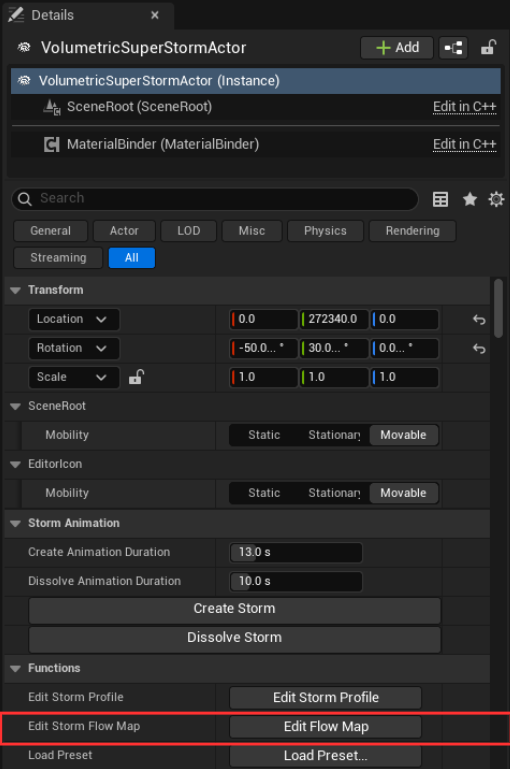
RGB sets direction only — on decode the vector is re-normalized, so distance from 0.5 has no effect on speed. Magnitude comes entirely from alpha. A neutral texel is (0.5, 0.5, 0.5, 0), which is what an empty layer holds and what Clear Layer writes back.
The three layers live in render targets on the storm’s flow map component. They are transient — built at runtime, never serialized. An asset is a saved snapshot, and seeding runs one way: asset into surfaces. That is why painting appears immediately, including in PIE, and equally why nothing survives closing Unreal unless it was written into an asset.
Unsaved transient flow map | Lower | 256 x 256 | unsaved changes
폭풍 회전과 상관없이 따로 도는 바람을 붓으로 그립니다. 레이어 세 장, 2.5D 필드입니다.
플로우맵은 폭풍 전체 회전과 별개로 움직입니다. 하단, 중단, 상단 레이어를 따로 그리면 높이에 따라 알아서 섞입니다.
액터 Details 패널 → Functions → Edit Storm Flow Map
RGB는 방향만 담습니다. 읽을 때 벡터를 다시 정규화하기 때문에 0.5 에서 얼마나 떨어져 있든 속도는 안 변합니다. 세기는 전부 알파가 결정합니다. 아무것도 없는 텍셀은 (0.5, 0.5, 0.5, 0) 값을 가집니다. 빈 레이어와 Clear Layer 결과가 이 값입니다.
세 레이어는 플로우맵 컴포넌트의 렌더 타깃에 들어 있습니다. 런타임에 만들어지는 임시 데이터라 저장되지 않습니다. 에셋은 그 순간을 떠 놓은 스냅샷이고, 데이터는 에셋에서 렌더 타깃으로만 흐릅니다. 그래서 PIE에서도 붓질이 바로 보입니다. 반대로 에셋에 쓰지 않으면 언리얼을 닫는 순간 다 날아갑니다.
Unsaved transient flow map | Lower | 256 x 256 | unsaved changes
Three lookup textures that carve the storm’s silhouette, and a 16-key timeline that animates them.
A vertical profile is a lookup texture that returns a density multiplier for a given height. The material samples it while marching through the cloud and multiplies the result into the density field, so profiles are what carve the storm’s silhouette from top to bottom.
There are three, and each owns one boundary.
All three work the same way: a threshold height is full density on one side and empty on the other, with a fade band across the boundary. Top is solid below its curve height and fades out as it approaches it. Anvil mirrors that, solid from its anchor downward and fading at the curve’s depth. Bottom ramps up from zero at the very base.
The Bottom profile is indexed differently from the other two: its horizontal axis is the cloud-bottom type selector rather than a column position, and a higher type widens the translucent transition so more of the wispy structure near the base shows through.
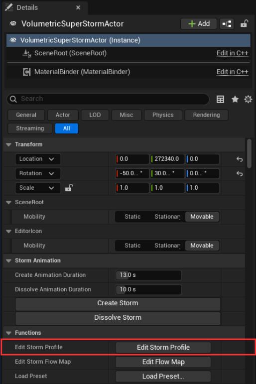
Clicking Edit Storm Profile opens the editor window.
A live thumbnail of the profile as the material reads it. It updates as you edit parameters or paint, so use it to judge the overall silhouette while the large canvas shows one profile at a time in detail. The < and > buttons cycle what it shows, and the label between them names the current one: Body Composite, the top and bottom profiles composited together, or Anvil.
Persistent Profile Asset, under Loaded, names the asset the live surfaces were seeded from.
The Top, Bottom and Anvil tabs choose which profile the canvas shows. The canvas renders density across the profile: white is full density, black is empty.
A profile asset is not a single shape but a sequence of up to 16 keys, and the timeline is where that sequence lives. Its header names the targeted asset and the key count — Sunset_Black (5/16 keys) in the screenshot.
The surface is generated from the parameters on the left, and regenerated whenever they change.
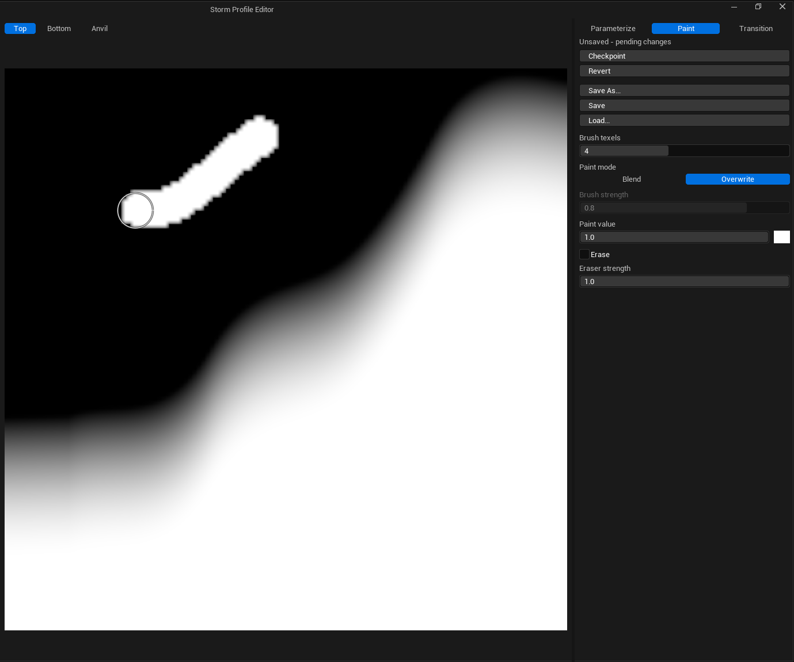
Paint mode freezes the current surfaces as a base and lets you brush directly onto them, for detail a curve cannot express. Strokes apply to the profile selected by the centre tab.
The bottom profile is parametric only — it has no painting stage. Select the Bottom tab to view it on the canvas, and use Bottom Fade for the vertical width of the fade band at the base. It is regenerated from parameters whenever the profile rebuilds, including as part of a Revert, so it stays coherent with the current parameter set.
The anvil profile controls how far the anvil reaches downward from its anchor, column by column. It is edited exactly like the top profile — the same Parameterize and Paint modes, the same brush, and the same caution about switching back to Parameterize.
It is measured downward. V = 0 is the anchor and V = 1 is the cloud-layer bottom, mirroring the top profile. The Anvil Profile Curve gives each column a depth rather than a height, so a larger value reaches further down.
It is paintable. Unlike the bottom profile, the brush does write to the anvil surface. Select the Anvil tab before painting.
A profile asset is a timeline of keys, not a single shape. Each key holds its own parameters and its own baked Top, Bottom and Anvil surfaces, and playback blends between adjacent keys — for a storm that changes silhouette over time rather than holding one shape.
An asset holds at most 16 keys, and no key can sit past 3600 s.
Add Key copies the selected key whole, embedded textures included, so sequences are easiest to build forward: author the first pose, duplicate it, move it, then change only what differs.
Forward and Reverse run the playhead from wherever it stands. Pause holds it with the composed preview still on screen; Stop ends the preview and puts the live authoring surfaces back on the storm. Loop is stored on the asset as Loop By Default, so it persists with the profile rather than the session.
The transport stays disabled until the sequence can actually play: two or more keys, every key’s surfaces baked, and a duration above zero.
On the storm’s vertical profile tool component, under Storm | Profile | Sequence.
Set Profile Sequence Time is what the editor’s own scrubbing uses. It is equally valid in gameplay when you want the position driven by your own curve rather than the built-in transport.
폭풍 실루엣을 깎는 룩업 텍스처 세 장, 그리고 그걸 움직이는 16키 타임라인.
높이를 넣으면 밀도 배수가 나오는 룩업 텍스처입니다. 머티리얼이 구름을 레이마칭하면서 이 값을 읽어 밀도에 곱합니다. 그래서 폭풍의 실루엣을 위아래로 깎는 게 프로파일입니다.
세 장이 있고 각각 경계 하나를 담당합니다.
셋 다 방식은 같습니다. 임계 높이를 기준으로 한쪽은 꽉 찬 밀도, 다른 쪽은 비어 있고, 경계에 페이드 밴드가 걸립니다. Top은 커브 높이 아래가 꽉 차 있고 가까워질수록 사라집니다. Anvil은 그걸 뒤집어서 기준점부터 아래로 꽉 차 있다가 커브 깊이에서 사라집니다. Bottom은 바닥 0에서 올라옵니다.
Bottom만 가로축이 다릅니다. 기둥 위치가 아니라 구름 바닥 타입 선택자입니다. 타입이 높으면 반투명 전이 구간이 넓어져서 바닥 근처 성긴 구조가 더 드러납니다.
Edit Storm Profile을 누르면 편집 창이 열립니다.
머티리얼이 읽는 그대로의 프로파일을 실시간으로 보여줍니다. 파라미터를 만지거나 붓질할 때마다 갱신되니, 큰 캔버스가 프로파일 한 장을 자세히 보여주는 동안 여기서 전체 실루엣을 판단하세요. <와 >로 보여줄 대상을 바꾸고, 가운데 라벨이 이름을 알려줍니다. Top과 Bottom을 합친 Body Composite, 또는 Anvil입니다.
Loaded 아래 Persistent Profile Asset은 지금 작업 중인 면을 어느 에셋에서 가져왔는지 알려줍니다.
Top·Bottom·Anvil 탭으로 볼 프로파일을 고릅니다. 캔버스는 밀도를 그대로 그립니다. 흰색이 꽉 찬 밀도, 검정이 빈 곳입니다.
프로파일 에셋은 모양 하나가 아니라 최대 16개 키로 된 시퀀스입니다. 그 시퀀스가 사는 곳이 타임라인입니다. 헤더가 대상 에셋과 키 개수를 보여줍니다. 스크린샷에서는 Sunset_Black (5/16 keys)입니다.
파라미터에서 면을 만들고, 값이 바뀌면 바로 다시 만듭니다.
지금 면을 베이스로 굳혀 두고 그 위에 직접 붓질합니다. 커브로 안 되는 디테일을 넣을 때 씁니다. 붓질은 중앙 탭에서 고른 프로파일에 들어갑니다.
Bottom은 파라미터 전용입니다. 페인트 단계가 없습니다. Bottom 탭을 골라 캔버스에서 보고, Bottom Fade로 바닥 페이드 폭을 조절합니다. Revert를 포함해 프로파일이 다시 만들어질 때마다 파라미터에서 재생성되니 현재 파라미터와 항상 맞습니다.
앤빌이 기준점에서 아래로 얼마나 뻗는지를 기둥별로 정합니다. 편집 방식은 Top과 똑같습니다. 같은 Parameterize와 Paint 모드, 같은 붓, Parameterize로 돌아갈 때의 같은 주의사항.
아래로 잽니다. V = 0이 기준점, V = 1이 구름 레이어 바닥입니다. Anvil Profile Curve가 각 기둥에 높이가 아니라 깊이를 주니, 값이 클수록 더 아래까지 내려옵니다.
붓질됩니다. Bottom과 달리 붓이 앤빌 면에 씁니다. 그리기 전에 Anvil 탭을 고르세요.
프로파일 에셋은 모양 하나가 아니라 키의 타임라인입니다. 키마다 자기 파라미터와 자기 Top·Bottom·Anvil 면을 들고 있고, 재생하면 인접한 키 사이를 블렌드합니다. 한 모양을 유지하는 게 아니라 시간에 따라 실루엣이 변하는 폭풍을 만들 수 있습니다.
에셋 하나에 키는 최대 16개, 어느 키도 3600초를 넘을 수 없습니다.
Add Key는 선택한 키를 텍스처까지 통째로 복사합니다. 그래서 앞에서 뒤로 쌓아가는 게 가장 편합니다. 첫 포즈를 만들고, 복제하고, 옮기고, 달라지는 부분만 고치세요.
Forward와 Reverse는 플레이헤드가 있는 자리에서 시작합니다. Pause는 합성된 프리뷰를 화면에 남긴 채 멈추고, Stop은 프리뷰를 끝내고 작업 중인 면을 폭풍에 다시 올립니다. Loop는 에셋에 Loop By Default로 저장되니 세션이 아니라 프로파일에 남습니다.
실제로 재생할 수 있을 때까지 트랜스포트는 비활성입니다. 키가 둘 이상, 모든 키의 면이 구워져 있고, 길이가 0보다 커야 합니다.
버티컬 프로파일 툴 컴포넌트의 Storm | Profile | Sequence 아래에 있습니다.
Set Profile Sequence Time은 에디터 스크럽이 쓰는 것과 같습니다. 내장 트랜스포트 대신 직접 만든 커브로 위치를 몰고 싶을 때 게임플레이에서도 그대로 유효합니다.
The emission that comes from inside the cloud volume rather than from a light in the scene.
A volumetric cloud is normally lit from outside: the directional light, the sky, and whatever else the scene provides. A storm does not read as a storm under that alone, because a real supercell is lit from within — a dull, sustained glow deep in the core, and the short violent bloom of a discharge.
So the plugin adds emission during the raymarch, split across two independent sources.
Both are ellipsoid masks placed in normalized storm space, both add radiance into the density field as the material marches through it, and neither is a light source in the engine’s sense.
A centre of (0, 0, 0.2) sits on the storm’s axis, a fifth of the way up the layer; an extent of 0.15 in X reaches 15% of the radius outward. Inner light therefore rescales with the storm for free — change Radius and the glow follows. The catch is that the vertical axis belongs to the Volumetric Cloud layer, so raising the layer moves the glow up in world space without you touching a parameter.
Storm | Settings → Shape Settings → Lighting
The static glow is the storm’s resting state: an ellipsoid of emission at the centre of the body, evaluated continuously and independently of lightning playback.
Two neighbours in the same section are easy to confuse with the glow. Brim Emissive Color tints the emissive contribution at the storm’s brim — a surface accent on the outer edge, not a volume glow at the core. Underside Visibility raises the visibility of the underside so the base does not read as a flat black disc; it corrects the existing scattering result rather than adding light.
Start at the default 0.05 and move in steps of 0.01. Because the contribution accumulates through the volume, the range that reads as “lit from within” rather than “a glowing sphere sitting inside the cloud” is narrow — roughly 0.02 to 0.08 for a storm at default Density.
The default extent is deliberately flatter vertically than it is wide (0.15 in X and Y against 0.14 in Z). A glow that is spherical in normalized space is taller than it looks in world space, because the cloud layer is thin compared to the radius, and it tends to push a bright cap through the top surface.
Storm | Settings → Lightning → Lightning Sequence
The flash is not one glowing blob — and not three cleanly separated concentric layers either. Three contributions share the same centre and the same two extents, Flash and Halo, and overlap to produce the final colour.
The default centre sits low in the layer, at about a fifth of its height, which is where a discharge inside the body reads best: high enough to light the mass above it, low enough that the underside catches the bounce.
The values below are the initial values the plugin ships. Colours are Linear RGB, and the current material does not use their alpha channel for the visual result.
Even then the colour appears only at the brightest centre, not across the whole core.
Everything above describes the flash at Pulse = 1. What makes it an actual flash is the Flash Pulse Curve: all three contributions are scaled by the single scalar the curve returns, and that scalar is the only value written to the material per frame. The static glow is not affected by it — a storm with lightning stopped is still lit from inside, it just is not flashing.
You author the curve yourself, in the curve editor on the Details panel. Two consequences are worth knowing before you start.
The plugin ships a one-second double-flash as the default, which reads well as an example of the shape.
All six keys are linear. What sells a discharge is the asymmetry — it switches on instantly and decays slowly and unevenly. A curve that eases in and out symmetrically reads as a lamp being turned up, not as lightning.
The default cue time of 0.20 in Ground Strike Times lands just after the first peak collapses, so the bolt appears while the cloud is still bright. That value is not a probability — it is the normalized time at which the ground strike event fires within the sequence.
씬의 라이트가 아니라 구름 볼륨 안쪽에서 나오는 발광을 다룹니다.
볼류메트릭 클라우드는 보통 바깥에서만 빛을 받습니다. 디렉셔널 라이트, 스카이, 그 밖에 씬에 있는 것들이죠. 그런데 실제 슈퍼셀은 안에서 빛나기 때문에 바깥 조명만으로는 폭풍처럼 보이지 않습니다. 코어 깊은 곳에서 계속 도는 둔한 발광과, 방전이 터질 때의 짧고 강한 블룸이 필요합니다.
그래서 레이마칭 중에 이미션을 더합니다. 소스는 두 개고 서로 독립입니다.
둘 다 정규화된 폭풍 공간에 놓인 타원체 마스크고, 머티리얼이 밀도 필드를 지나갈 때 복사를 더합니다. 어느 쪽도 엔진이 인식하는 라이트는 아닙니다.
중심이 (0, 0, 0.2)면 폭풍 축 위, 레이어 높이의 5분의 1 지점입니다. X 크기가 0.15면 반경의 15%까지 뻗습니다. 덕분에 Radius를 바꾸면 발광도 같이 스케일됩니다. 대신 세로축은 Volumetric Cloud 레이어 것이라, 레이어를 올리면 파라미터를 안 건드려도 발광 위치가 월드에서 올라갑니다.
Storm | Settings → Shape Settings → Lighting
폭풍의 기본 상태입니다. 본체 중심에 놓인 이미션 타원체가 라이트닝 재생과 무관하게 계속 평가됩니다.
같은 섹션에 있는 두 값은 발광과 헷갈리기 쉬워서 구분해 둘 만합니다. Brim Emissive Color는 폭풍 브림의 이미션을 물들이는 값으로, 코어의 볼륨 발광이 아니라 바깥 경계의 표면 악센트입니다. Underside Visibility는 바닥이 검은 원판처럼 보이지 않게 아래쪽 가시성을 올립니다. 빛을 더하는 게 아니라 이미 계산된 스캐터링 결과를 보정합니다.
기본값 0.05에서 시작해 0.01씩 움직이세요. 볼륨을 지나며 누적되기 때문에 "안에서 빛난다"로 읽히는 구간과 "구름 안에 발광구가 박혀 있다"로 읽히는 구간의 차이가 좁습니다. 기본 Density 기준으로는 대략 0.02에서 0.08 사이가 출발점입니다.
기본 크기는 일부러 세로가 가로보다 납작합니다(X·Y 0.15 대 Z 0.14). 정규화 공간에서 구형인 발광은 구름 레이어가 반경보다 얇기 때문에 월드에서는 보기보다 키가 커지고, 밝은 캡이 위쪽 표면을 뚫고 나오기 쉽습니다.
Storm | Settings → Lightning → Lightning Sequence
플래시는 발광 덩어리 하나도 아니고, 깔끔하게 분리된 동심 레이어 세 개도 아닙니다. 같은 중심과 같은 두 크기(Flash, Halo)를 공유하는 기여 세 개가 겹쳐서 최종 색을 만듭니다.
기본 중심은 레이어 높이의 5분의 1쯤, 낮은 곳에 있습니다. 본체 안쪽 방전은 그 높이가 가장 잘 읽힙니다. 위쪽 덩어리를 밝힐 만큼은 높고, 아래쪽이 반사광을 받을 만큼은 낮습니다.
아래는 플러그인이 들고 나가는 초기값입니다. 색은 Linear RGB고, 현재 머티리얼은 알파 채널을 결과에 쓰지 않습니다.
그래도 이 색은 코어 전체가 아니라 가장 밝은 중심에만 나타납니다.
위 내용은 모두 Pulse = 1 상태의 플래시입니다. 이걸 실제 플래시로 만드는 건 Flash Pulse Curve입니다. 세 기여 전부가 커브가 돌려주는 스칼라 하나로 스케일되고, 프레임마다 머티리얼에 쓰이는 값은 그 스칼라뿐입니다. Static Glow는 영향을 받지 않아서, 라이트닝을 멈춘 폭풍도 안에서는 여전히 빛나고 다만 번쩍이지 않을 뿐입니다.
커브는 Details 패널의 커브 에디터에서 직접 짭니다. 시작하기 전에 알아둘 게 두 가지 있습니다.
기본값으로 1초짜리 이중 섬광이 들어 있습니다. 형태 예시로 읽기 좋습니다.
여섯 키 전부 선형입니다. 방전처럼 보이게 하는 건 비대칭입니다. 즉시 켜지고 느리게, 고르지 않게 감쇠합니다. 좌우 대칭으로 이징하는 커브는 번개가 아니라 조명을 서서히 올리는 것처럼 읽힙니다.
Ground Strike Times의 기본 큐 시간 0.20은 첫 피크가 붕괴한 직후라, 구름이 아직 밝을 때 볼트가 나타납니다. 이 값은 확률이 아니라 시퀀스 안에서 지상 낙뢰 이벤트가 발생하는 정규화된 시간입니다.
One asset holding the storm’s complete authorable configuration.
The actor transform, target cloud reference, base cloud material, and the Volumetric Cloud component’s own settings — layer altitude, layer height, tracing and quality — remain outside the preset and must be configured separately.
ApplyPreset copies values into the actor, updates the profile and flow-map components, sanitizes the result and performs a full render-data rebuild. The actor does not retain a live link to the preset asset.
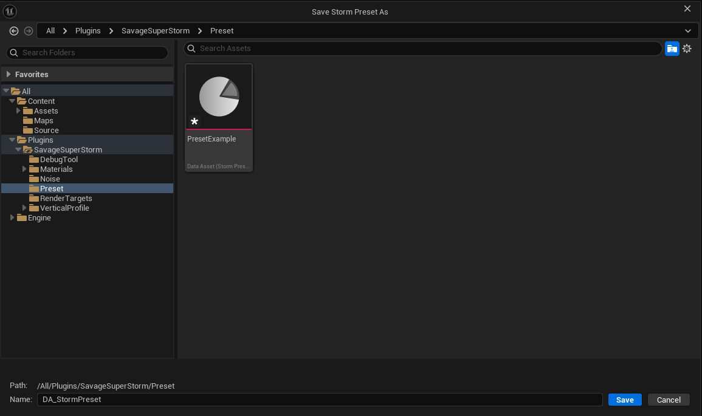
Save Preset As writes to /Game/SuperStorm/Presets in your project, not into the plugin. The folder is created on first use, and the dialog asks only for a name — you cannot save outside that directory by accident.
Change the location under Edit → Project Settings → Plugins → Volumetric Super Storm → Authoring Directories.
Load Preset lists your saved presets alongside the examples that ship with the plugin, so the bundled SP_* presets stay available as starting points.
작업한 폭풍 설정을 통째로 담아 두는 에셋입니다.
액터 트랜스폼, 대상 클라우드 참조, 베이스 클라우드 머티리얼은 프리셋 밖입니다. Volumetric Cloud 컴포넌트 설정도 마찬가지입니다. 레이어 고도와 두께, 트레이싱, 품질은 직접 맞춰주세요.
ApplyPreset 을 호출하면 값이 액터로 복사되고 프로파일과 플로우맵 컴포넌트가 갱신됩니다. 값을 정리한 다음 렌더 데이터를 전부 다시 만듭니다. 적용이 끝나면 프리셋과의 연결은 끊깁니다.
Save Preset As는 플러그인이 아니라 프로젝트의 /Game/SuperStorm/Presets에 씁니다. 폴더는 처음 쓸 때 자동으로 만들어지고, 다이얼로그는 이름만 묻습니다. 실수로 다른 데 저장될 일이 없습니다.
위치는 Edit → Project Settings → Plugins → Volumetric Super Storm → Authoring Directories에서 바꿉니다.
Load Preset은 저장한 프리셋과 플러그인 예시를 같이 보여줍니다. 배포되는 SP_* 프리셋을 출발점으로 계속 쓸 수 있습니다.
The single orchestrator a world accepts, and everything it owns.
AVolumetricSuperStormActor owns the authorable state and coordinates rendering, motion, profiles, flow maps, lightning, formation and the cloud material binder. A world accepts one registered actor; an additional one is disabled rather than replacing the active storm or sharing mutable render state.
The actor registers with UStormRenderWorldSubsystem, builds one immutable shape-bake input set, and uploads the resulting shape textures to the target cloud material. Static changes rebuild the shape data; profile changes update only profile textures; motion, transform, lifecycle and lightning changes use frame-level uploads.
월드에 하나만 둘 수 있는 액터입니다. 무엇을 들고 있는지 정리했습니다.
AVolumetricSuperStormActor 가 작업 상태를 전부 들고 있습니다. 렌더링, 모션, 프로파일, 플로우맵, 라이트닝, 형성, 그리고 클라우드 머티리얼 바인더까지 여기서 조율합니다. 월드에 등록되는 건 하나뿐입니다. 두 번째 액터를 놓으면 기존 폭풍을 밀어내거나 렌더 상태를 나눠 쓰는 대신 그냥 비활성화됩니다.
액터는 UStormRenderWorldSubsystem 에 등록한 다음, 한 번 만들면 바뀌지 않는 셰이프 베이크 입력 세트를 만듭니다. 그 결과 텍스처가 대상 클라우드 머티리얼로 올라갑니다. 고정 값이 바뀌면 셰이프를 다시 만들고, 프로파일이 바뀌면 프로파일 텍스처만 갱신합니다. 모션, 트랜스폼, 라이프사이클, 라이트닝은 프레임마다 올립니다.
Five objects divide the work: binding, lightning, flow, profiles, and the world-level rule.
UStormMaterialBinderComponent publishes the registered storm’s render data to the cloud material. BindingBackend selects how.
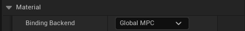
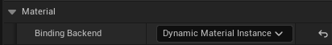
M_StormMinimalSetup is built for the Global MPC backend and M_VolumetricSuperStorm for the Dynamic Material Instance backend. They are not interchangeable: M_StormMinimalSetup exposes none of the contract parameters, so selecting it as BaseCloudMaterial is refused.
Under the Dynamic Material Instance backend, TargetCloudReference is the preferred target. When it is unset, automatic selection succeeds only when the world contains exactly one Volumetric Cloud component. An ambiguous world is rejected rather than selecting an arbitrary cloud.
The Global MPC backend leaves the cloud’s material untouched.
Under the Dynamic Material Instance backend the binder stores the material active before binding, creates a dynamic instance owned by the component, assigns it to the cloud, and restores the previous material when the storm unregisters or is destroyed. A parent that fails the contract check is refused with a log error and no instance is created. External material changes can be adopted as the new parent while editing when bTrackTargetCloudMaterialChange is enabled.
The three properties below BindingBackend are hidden in the Details panel under the default backend.
UStormLightningComponent evaluates the lightning cue sequence, updates the material pulse, resolves ground-strike locations, and publishes start, cue, strike, pulse and finish events. Motion and lightning use the same resolved storm identifier.
UStormFlowMapComponent owns the lower, middle and upper painted flow layers, their live render targets, and the persistent flow-map asset. Painting the upper layer marks the storm shape bake dirty because the shape compute pass samples that layer.
UStormVerticalProfileToolComponent owns live bottom, top and anvil profile render targets. Profile transitions blend all three surfaces in one render graph and then update only the profile texture bindings; they do not resubmit or rebake the storm shape.
UStormRenderWorldSubsystem enforces the one-storm-per-world rule and owns the two shape render targets. It caches sampled curve lookup tables with their bake hash so each curve is sampled once per full update.
바인딩, 라이트닝, 플로우, 프로파일, 그리고 월드 규칙. 역할이 다섯으로 나뉩니다.
UStormMaterialBinderComponent가 등록된 폭풍의 렌더 데이터를 클라우드 머티리얼로 보냅니다. 어떤 방식으로 보낼지는 BindingBackend가 정합니다.
M_StormMinimalSetup은 Global MPC용, M_VolumetricSuperStorm은 Dynamic Material Instance용입니다. 서로 바꿔 쓸 수 없습니다. M_StormMinimalSetup은 계약 파라미터를 하나도 노출하지 않으니 BaseCloudMaterial로 고르면 거부됩니다.
Dynamic Material Instance 백엔드에서는 TargetCloudReference가 우선입니다. 비어 있으면 자동으로 찾는데, 월드에 Volumetric Cloud가 딱 하나일 때만 성공합니다. 여러 개면 아무거나 고르지 않고 거부합니다.
Global MPC 백엔드는 클라우드 머티리얼을 그대로 둡니다.
Dynamic Material Instance에서는 바인더가 바인딩 전 머티리얼을 기억해 두고, 자기가 소유하는 다이내믹 인스턴스를 만들어 클라우드에 지정합니다. 폭풍이 빠지거나 파괴되면 원래 머티리얼로 되돌립니다. 계약 검사를 통과하지 못한 부모는 로그 에러와 함께 거부되고 인스턴스도 만들지 않습니다. bTrackTargetCloudMaterialChange를 켜면 편집 중에 외부에서 바뀐 머티리얼을 새 부모로 받아들입니다.
BindingBackend 아래 세 프로퍼티는 기본 백엔드에서는 Details 패널에 숨어 있습니다.
UStormLightningComponent는 큐 시퀀스를 계산하고 머티리얼 펄스를 갱신합니다. 지상 낙뢰가 떨어질 위치를 정하고, 시작·큐·낙뢰·펄스·종료 시점마다 이벤트를 냅니다. 모션과 라이트닝은 같은 폭풍 ID를 씁니다.
UStormFlowMapComponent는 하단·중단·상단 레이어와 렌더 타깃, 연결된 에셋을 들고 있습니다. 셰이프 컴퓨트 패스가 상단 레이어를 읽기 때문에, 그 레이어를 그리면 셰이프 베이크가 dirty가 됩니다.
UStormVerticalProfileToolComponent은 바텀·톱·앤빌 프로파일 렌더 타깃을 들고 있습니다. 프로파일 전환은 세 면을 렌더 그래프 한 번에 블렌드하고 프로파일 텍스처 바인딩만 갱신합니다. 셰이프는 다시 제출하지도, 다시 굽지도 않습니다.
UStormRenderWorldSubsystem은 월드당 폭풍 하나 규칙을 지키고 셰이프 렌더 타깃 두 장을 들고 있습니다. 샘플한 커브 룩업 테이블은 베이크 해시와 함께 캐시해서, 전체 업데이트 한 번에 커브를 한 번만 읽습니다.
Every control the active render, motion, formation and lightning paths actually consume.
Coordinate Scale scales the storm’s noise coordinates without changing its bounds. Lower values make larger features; higher values make smaller ones that repeat more often. The material applies it to the horizontal, reference-relative storm position before the noise coordinates are built.
ScaledPositionXY =
(WorldPositionXY - StormReferenceCenterXY) * StormCoordinateScale
NoisePositionXY = MotionOffsetXY + ScaledPositionXYThe world subsystem samples the six named float curves into 256-entry lookup tables during a full update. Radial shape curves →
Every sequence draws one strike point from a ring around the flash centre. The material flash and the ground bolt both read that point, so the glow sits over the bolt. The draw happens even when no bolt is produced, and it is seeded from the storm identifier — a given storm repeats the same points across runs.
The bolt root is held inside the storm’s own vertical band at its radius, so it never starts below the cloud base or above the top no matter how the offset is set. Bolts run from that root to traced ground; where nothing is loaded to hit, they fall back to world Z 0.
렌더, 모션, 형성, 라이트닝이 실제로 읽는 값만 모았습니다.
Coordinate Scale은 폭풍의 경계를 그대로 두고 노이즈 좌표만 스케일합니다. 값이 낮으면 특징이 커지고, 높으면 작아지면서 더 자주 반복됩니다. 머티리얼이 노이즈 좌표를 만들기 전에, 기준점 상대 수평 위치에 이 값을 곱합니다.
ScaledPositionXY =
(WorldPositionXY - StormReferenceCenterXY) * StormCoordinateScale
NoisePositionXY = MotionOffsetXY + ScaledPositionXY전체 업데이트가 돌 때 월드 서브시스템이 커브 여섯 개를 256칸 룩업 테이블로 샘플합니다. 방사 커브 자세히 →
시퀀스마다 플래시 중심 주변의 링에서 낙뢰 지점 하나를 뽑습니다. 머티리얼 플래시와 지상 볼트가 같은 지점을 읽으니 발광이 볼트 위에 놓입니다. 볼트가 나오지 않아도 뽑기는 일어나고, 폭풍 식별자로 시드를 잡으니 같은 폭풍은 실행마다 같은 지점을 반복합니다.
볼트 뿌리는 해당 반경에서 폭풍 자체의 수직 밴드 안에 유지됩니다. 오프셋을 어떻게 잡아도 구름 바닥 아래나 천장 위에서 시작하지 않습니다. 볼트는 그 뿌리에서 트레이스된 지면까지 이어지고, 맞을 게 로드되지 않았으면 월드 Z 0으로 떨어집니다.
The nodes and events exposed on the actor and its components.
A vertical profile asset holds a sequence of keys; these nodes play it. The same set is available on the Storm Vertical Profile Tool component.
액터와 컴포넌트에서 쓸 수 있는 노드와 이벤트입니다.
프로파일 에셋은 키 시퀀스를 들고 있고, 이 노드들이 그걸 재생합니다. 같은 세트가 Storm Vertical Profile Tool 컴포넌트에도 있습니다.
What the renderer deliberately does not do.
The plugin is built and supported on Windows 64-bit with DirectX 12 and Shader Model 6. The compute passes and the shipped cloud material target that feature set; DirectX 11 and SM5 are not supported.
The renderer intentionally supports one registered storm actor in each world. The world subsystem rejects an additional actor instead of sharing or replacing shape render targets. Use separate worlds or streamed world instances when two independent storms must render simultaneously.
This rule counts actor instances, not classes. BP_VolumetricSuperStorm derives from the native storm actor, so placing both the Blueprint and the native actor puts two storm actors in the world and the second one is rejected.
The plugin ships no bolt VFX and no sound assets. What it ships is the timing: the lightning component evaluates the cue sequence, resolves ground strikes, drives the material pulse, and raises start, cue, strike, pulse and finish Blueprint events so that projects can drive their own bolts, thunder and ambience. BP_VolumetricSuperStorm carries worked examples of those handlers.
The plugin renders through Unreal’s native Volumetric Cloud component.
This applies to the Dynamic Material Instance binding backend. Set TargetCloudReference explicitly when the world contains more than one cloud; automatic targeting succeeds only when exactly one candidate exists. The binder replaces the target cloud’s material with a dynamic instance while the storm is active, and restores the previous material when the storm unregisters or is destroyed.
The default Global MPC backend never reassigns a cloud material. It writes to a shared Material Parameter Collection instead, so every cloud whose material contains MF_Storm_Global responds to the storm.
Vertical placement is defined by the Volumetric Cloud component’s layer bottom altitude and layer height. Storm profiles and shape heights use normalized layer space, from zero at the layer bottom to one at the layer top. Moving the storm actor vertically does not move the cloud layer — change the layer settings to change absolute altitude or thickness.
Tracing distance, quality, platform support and project-level r.VolumetricCloud.* settings come from Unreal’s cloud renderer. These can change appearance and performance between editor, PIE and packaged builds.
The subsystem owns two RGBA16F shape targets — roughly 64 MiB together at the maximum supported 2048 resolution. Flow maps and profile targets add to that, so high resolutions should be reserved for shots that need the extra detail.
일부러 지원하지 않는 것들이 있습니다.
Windows 64-bit에 DX12, SM6 조합만 빌드하고 지원합니다. 컴퓨트 패스와 배포 클라우드 머티리얼이 그 기능 집합을 기준으로 만들어졌습니다. DX11과 SM5는 지원하지 않습니다.
월드마다 폭풍 액터 하나만 등록됩니다. 일부러 이렇게 만들었습니다. 두 번째 액터는 셰이프 렌더 타깃을 나눠 쓰거나 기존 걸 교체하는 대신 그냥 거부됩니다. 독립된 폭풍 두 개를 동시에 띄워야 하면 월드를 나누거나 스트리밍 월드 인스턴스를 쓰세요.
이 규칙은 클래스가 아니라 액터 인스턴스를 셉니다. BP_VolumetricSuperStorm은 네이티브 스톰 액터를 상속하므로, 블루프린트와 네이티브 액터를 둘 다 놓으면 스톰이 두 개가 되고 두 번째가 거부됩니다.
볼트 VFX도 사운드 에셋도 배포하지 않습니다. 들어 있는 건 타이밍입니다. 라이트닝 컴포넌트가 큐 시퀀스를 계산하고, 지상 낙뢰 위치를 정하고, 머티리얼 펄스를 돌리고, 시작·큐·낙뢰·펄스·종료 이벤트를 블루프린트로 올립니다. 볼트와 천둥, 앰비언스는 프로젝트에서 직접 붙이세요. BP_VolumetricSuperStorm에 그 핸들러 예시가 들어 있습니다.
언리얼 네이티브 Volumetric Cloud 컴포넌트로 그립니다.
여기서 말하는 건 Dynamic Material Instance 백엔드입니다. 월드에 클라우드가 둘 이상이면 TargetCloudReference를 직접 지정하세요. 자동으로 찾는 건 후보가 딱 하나일 때만 됩니다. 폭풍이 살아 있는 동안 바인더가 대상 머티리얼을 다이내믹 인스턴스로 바꿔두고, 폭풍이 빠지거나 파괴되면 원래대로 돌려놓습니다.
기본값인 Global MPC 백엔드는 클라우드 머티리얼을 아예 건드리지 않습니다. 공유 Material Parameter Collection에 쓰기 때문에, MF_Storm_Global이 들어 있는 머티리얼을 쓰는 모든 클라우드가 폭풍에 반응합니다.
폭풍이 어느 높이에 뜨는지는 Volumetric Cloud 컴포넌트의 레이어 바닥 고도와 두께가 결정합니다. 프로파일과 셰이프 높이는 바닥 0, 천장 1 기준입니다. 액터를 위아래로 옮겨도 구름 레이어는 따라오지 않습니다. 절대 고도나 두께를 바꾸려면 클라우드 레이어 설정을 만지세요.
트레이싱 거리, 품질, 플랫폼 지원, r.VolumetricCloud.* 설정은 언리얼 클라우드 렌더러 쪽입니다. 이 값들 때문에 에디터, PIE, 패키징 빌드에서 결과와 성능이 달라질 수 있습니다.
서브시스템이 RGBA16F 셰이프 타깃 두 장을 계속 들고 있습니다. 2048에서 둘 합쳐 64 MiB 정도입니다. 여기에 플로우맵과 프로파일 타깃까지 붙으니, 높은 해상도는 디테일이 꼭 필요한 샷에만 쓰세요.
The failures that actually happen, and what to check first.
The binder logs an error when the target is ambiguous, when the material contract is incomplete, or when the Global MPC backend cannot find its internal collection and render-target assets.
The most common cause is two storm actors in the level. BP_VolumetricSuperStorm is a Blueprint subclass of the native storm actor, so placing both puts two storm actors in the world — only the first registers, and the one you are editing may be the rejected second.
Search the World Outliner for every actor deriving from the storm actor and keep one.
Expected. The plugin ships the lightning timing, not its presentation — no bolt VFX and no audio. The lightning component exposes start, cue, strike, pulse and finish events to Blueprint; bind your own bolt and thunder cues to them, and BP_VolumetricSuperStorm shows where they attach. The storm’s own material pulse does fire, so the cloud still flashes on cue.
Intentional. The world subsystem accepts one storm actor and rejects an additional one rather than sharing shape render targets.
Intentional. The binder restores the material that was active before it created its dynamic instance.
PIE owns separate transient profile render targets. Save profile changes to a profile asset in the editor world when they must persist.
Verify that every key in the sequence holds valid bottom, top and anvil profile surfaces. A black or missing surface produces an empty density response as playback reaches that key.
A static shape edit updates the bake input and is processed by the world subsystem on its next tick. Profile, motion, lifecycle and lightning updates do not wait for a shape rebake.
자주 겪는 문제들입니다. 먼저 볼 곳을 정리했습니다.
대상이 애매할 때, 머티리얼 계약이 불완전할 때, Global MPC 백엔드가 내부 컬렉션과 렌더 타깃 에셋을 못 찾을 때 바인더가 에러를 찍습니다.
레벨에 스톰 액터가 두 개인 경우가 가장 많습니다. BP_VolumetricSuperStorm은 네이티브 스톰 액터의 블루프린트 서브클래스라, 둘 다 놓으면 월드에 스톰이 두 개가 됩니다. 먼저 등록된 하나만 살아남는데, 지금 만지고 있는 게 거부된 두 번째일 수 있습니다.
월드 아웃라이너에서 스톰 액터를 상속한 액터를 전부 찾아 하나만 남기세요.
정상입니다. 배포하는 건 라이트닝의 타이밍이지 겉모습이 아닙니다. 볼트 VFX도 사운드도 없습니다. 라이트닝 컴포넌트가 시작·큐·낙뢰·펄스·종료 이벤트를 블루프린트로 올려주니 볼트와 천둥을 거기에 물리세요. BP_VolumetricSuperStorm에 붙이는 자리가 나와 있습니다. 머티리얼 펄스는 그대로 도니 구름은 큐에 맞춰 번쩍입니다.
의도한 동작입니다. 월드 서브시스템은 폭풍 액터 하나만 받고, 셰이프 렌더 타깃을 나눠 쓰는 대신 두 번째를 거부합니다.
의도한 동작입니다. 바인더가 다이내믹 인스턴스를 만들기 전에 걸려 있던 머티리얼로 되돌립니다.
PIE는 임시 프로파일 렌더 타깃을 따로 씁니다. 남기려면 에디터 월드에서 프로파일 에셋으로 저장하세요.
시퀀스의 모든 키에 바텀·톱·앤빌 면이 제대로 들어 있는지 보세요. 검거나 빠진 면이 있으면 재생이 그 키에 닿는 순간 밀도가 0으로 나옵니다.
셰이프 쪽 고정 값을 바꾸면 베이크 입력만 갱신해 두고, 실제 처리는 월드 서브시스템 다음 틱에 합니다. 프로파일, 모션, 라이프사이클, 라이트닝은 셰이프 리베이크를 기다리지 않습니다.
Version 1.0.0, released 4 August 2026 for Unreal Engine 5.8.
The material parameter contract is part of the public surface. Adding, renaming or removing a contract parameter requires a major version, because a cloud material authored against the old contract stops binding.
One registered storm actor per world — place either BP_VolumetricSuperStorm or the native actor, not both. Automatic cloud targeting requires exactly one cloud component in the level. Storm heights are normalized to the cloud layer, with absolute altitude and thickness remaining properties of the cloud component. PIE profile edits do not persist. Two RGBA16F shape targets cost roughly 64 MiB at 2048. Lightning ships as timing and events only — no bolt VFX and no audio.
1.0.0 — 2026년 8월 4일, 언리얼 엔진 5.8용 첫 공개 릴리스입니다.
머티리얼 파라미터 계약은 공개 인터페이스로 취급합니다. 여기에 뭘 추가하거나, 이름을 바꾸거나, 빼면 메이저 버전을 올립니다. 예전 기준으로 만든 클라우드 머티리얼이 더 이상 붙지 않기 때문입니다.
월드당 폭풍 하나. BP_VolumetricSuperStorm과 네이티브 액터 중 하나만 놓으세요. 클라우드 자동 지정은 레벨에 클라우드 컴포넌트가 하나일 때만 됩니다. 높이는 구름 레이어 기준 0~1이고, 절대 고도와 두께는 클라우드 컴포넌트 쪽 값입니다. PIE에서 그린 프로파일은 남지 않습니다. 2048에서 셰이프 타깃 두 장이 64 MiB 정도를 씁니다. 라이트닝은 타이밍과 이벤트만 배포하고 볼트 VFX와 사운드는 없습니다.
Team GoroGoro came out of Krafton Jungle Game Tech Lab, cohort 3. Volumetric Super Storm is what we built there: the storm we wanted in a level, as one actor, live in the editor viewport, tuned by painting instead of typing numbers into fields.
Krafton Jungle 게임 테크 랩 3기 팀 GOROGORO입니다.
크고 아름다운 폭풍을 만들었습니다.